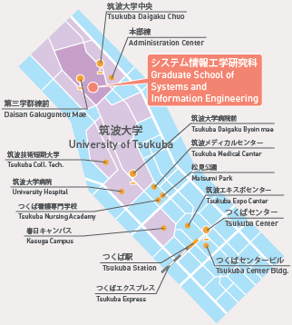
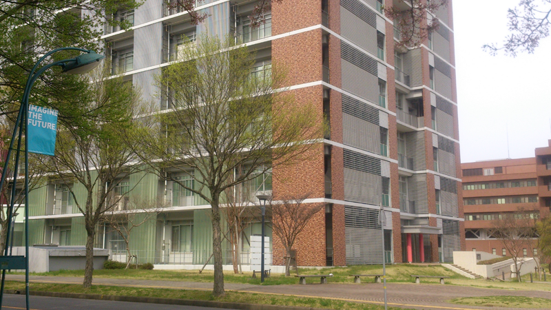
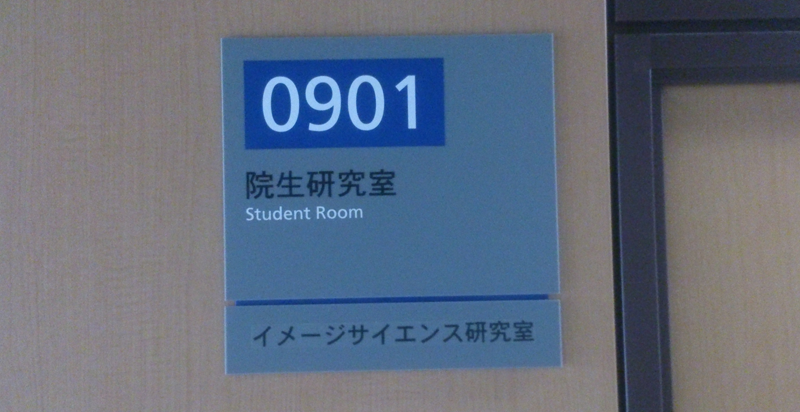

アクセス
イメージサイエンス研究室までのアクセス方法を説明いたします．
筑波大学へのアクセス
情報理工学位プログラムのページをご覧ください．
研究室へのアクセス
イメージサイエンス研究室には，2つの部屋があり，総合研究棟B901号室では主に画像処理を，共同研究棟A110号室では医用画像を研究しています．

上記の地図に従って総合研究棟B（地図中：システム情報工学研究科）にお越しください．
バスの場合は，「第一エリア前」で下車してください．以下の建物が当研究室の所属する研究棟になります．

エレベータで9階まで上がっていただきまして，901号室が当研究室（本室）になります．

所在地情報
〒305-8573 つくば市天王台1-1-1イメージサイエンス研究室
（本室）画像ラボ （総合研究棟B901号室）
（分室）CTラボ （共同研究棟A110号室）